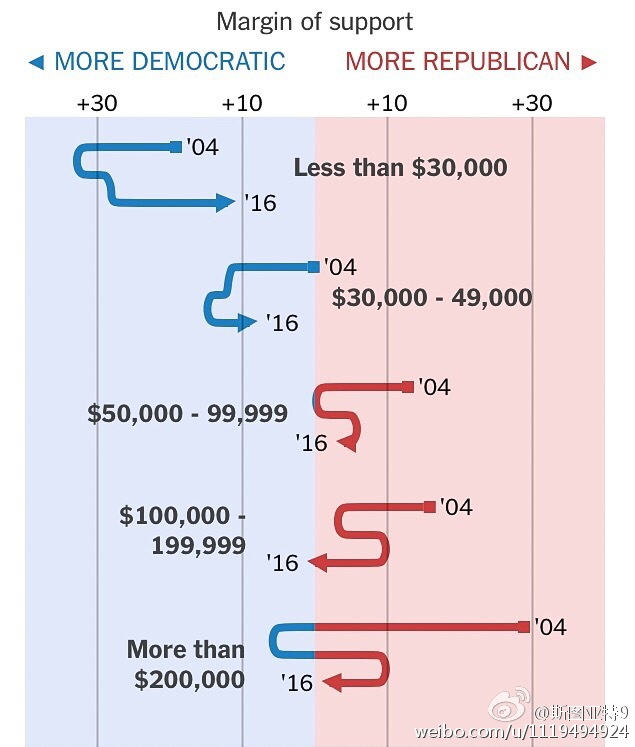
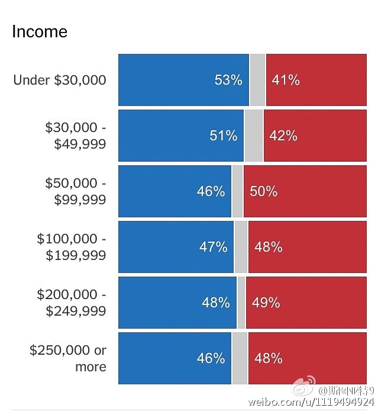
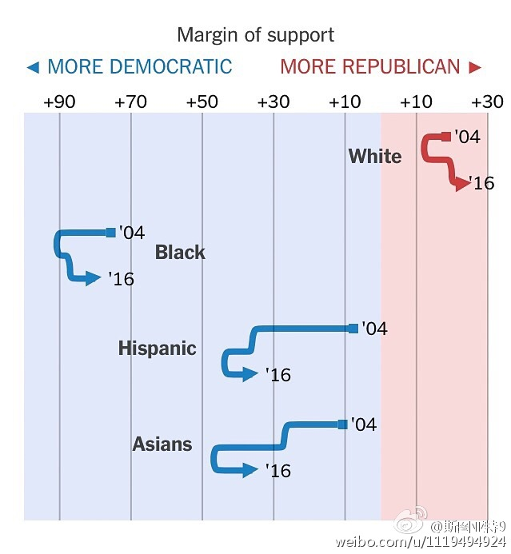

从美国大选出口民调看各群体两党的支持率。几乎每个收入阶层对两党的支持率都在向50:50靠拢。年收入不到3万美元的虽然依然是最倾向于支持民主党的，但向50:50靠拢的倾向最明显。各收入阶层对两党的支持率出奇的平均。白人、黑人、拉丁裔和亚裔都比上次大选小幅靠共和党了，亚裔靠拢最多。 
这次在某些地方和2000年美国大选似曾相识：8年的民主党执政后，一次非常接近的大选，共和党当选，民主党候选人获得更多选民票数（这次还差少数票数没开，希拉里暂时比特朗普多21万张）。但仔细看又很不一样，这次民主党在选举人票上比2000年多输了很多。
美股在特朗普当选后比较平稳，大概认为他的政策不会有太大颠覆性，或者是持观望态度。各行业股中，除了医药股狂涨（大概认为国会对控制药品定价是没戏了）以外，都涨跌2%以内。科技股略跌工业股略涨，大概是应对反全球化提高关税的承诺；金融股略涨，大概预期放松管制；医疗保险股跌幅较大，不知道为什么。